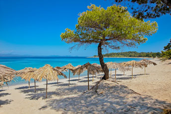
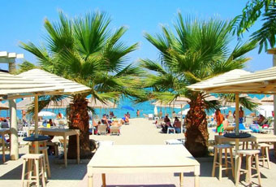

HANIOTI – OSNOVNI PODACI
Hanioti je maleno selo na poluostrvu Halkidiki, i to na “prvom prstu” poluostrva, od Soluna je udaljeno samo 50 minuta vožnje. Po dolasku, svaki posetilac će biti očaran ovim živopisnim delom Grčke, koji može da podmiri ukus i najizbirljivijih putnika, i koji garantuje nezaboravno provedeno letovanje i odmor.
Hanioti je tiho i lepo turističko mesto, te je idealno za porodičan odmor. Na plažama se nalazi pesak ili vrlo sitan šljunak, a čisto i toplo more ima predivnu tirkizno plavu boju. Lepo uredjeni park se nalazi neposredno uz samu plažu. Lepo održavano zelenilo i palme u parku ne mogu nikoga da ostave ravnodušnim. Kada su velike vrućine na plaži, zaklon od sunca uvek se može pronaći u prirodnoj hladovini ovoga parka.
Veliki broj hotela i vila sa apartmanima pruža usluge u Haniotiju. Ovo letovalište može da ponudi raznovrsne i vrlo zanimljive turističke sadržaje. Postoji mnoštvo restorana i tradicionalnih taverni, osim toga tu je i mnoštvo savremenih barova, kao i noćnih lokala. Različitih ugostiteljskih objekata je mnogo, pa ste u mogućnosti da nadjete odgovarajući lokal namenjen dnevnom odmoru uz kafu, ili pak onaj koji je namenjen izlasku za večernju zabavu. Turisti, bez obzira na starosnu dob, i sa sasvim različitim merilima o kvalitetu i načinu provoda i odmora, uvek će biti zadovoljni pronadjenim.
U svojoj ponudi Hanioti nudi prednosti velikog svetskog centra, uz prelepu prirodu sa mnogo zelenila i za Halkidiki karakteristično kristalno čisto more. Osim toga ljubazni grčki domaćini su nadaleko poznati po svojoj srdačnosti i toplini, što stvara realne pretpostavke da ćete doživeti nezaboravan odmor koji ćete dugo pamtiti.
HANIOTI – KORISNE INFORMACIJE
Centar Haniotija je, kao i u svim letovalištima, pretrpan buticima, radnjicama sa raznim sitnicama i prodavnicama suvenira. Ukoliko budete poželeli da prepešačite celo mesto, uvidećete da prvi utisak o veličini mesta vara i da ono i nije tako malo. Duž mora i na jugu i na severu prostire se mnoštvo hotela i vila za izdavanje, a ako krenete dalje bilo ka Pefkohoriju ili Polihronu, pogled će vam privući prekrasne privatne kuće, sa velikim vrtovima oko njih i izlazom na plažu i more.
Ako poželite da obidjete neko obližnje mesto to možete učiniti autobuskim prevozom i to sa stanica koje se nalaze na magistrali. Za razgledanje Haniotija i okoline u sopstvenoj režiji, preporuka je da na trgu u Haniotiju iznajmite bicikl ili moped. Ako budete želeli da vidite i druge plaže u okolini, najpoznatija plaža Xenia, nalazi se na udaljenosti od oko 12 km južno od Haniotija. To je velika potkovičasta uvala, sa sitnim peskom i izuzetno čistom i prozirnom vodom mora.
Ukoliko želite da uživate u krstarenju zalivom, upravo sa plaže Xenia polazi brod, a tu se i vraća. Pod krstarenjem se podrazumeva lagana i prijatna vožnja turističkim jedrenjakom do Neos Marmarasa na suprotnoj strani zaliva i nazad. U povratku u nekoj od mnogobrojnih uvala, brod pravi pauzu i tu možete da skačete s broda u more. Za one koji vole vožnju brodom ovo predstavlja pravo uživanje, posada su šarmantni likovi za pamćenje.
U pravcu Soluna na udaljenosti od 10 km nalazi se supermarket LIDL, a u samom mestu se nalazi još jedan veliki supermarket. Bilo da ćete otići u “šoping turu” ili ga obići pod vodjstvom vodiča, u svakom slučaju obilazak Soluna se nameće kao obaveza”. Solun ima sjajnu atmosferu i pijacu gde možete naći masline “crne kao noć” i velike kao šljive.
HANIOTI – LETOVALIŠTA NA KASANDRI
Hanioti je poznato grčko letovalište smešteno na unutrašnjoj strani poluostrva Kasandra i skriveno je kao u raju pod obroncima brda prekrivenih četinarima. Smešten je na oko 100 km od Soluna, a veruje se da je jedna od najlepših turističkih destinacija na “prvom prstu” Halkidikija.
Kasandra je najgušće naseljen “prst” Halkidikija, a pored svoje prelepe kilometrima duge razudjene obale, bujne prirode i kristalno čiste morske vode, ova destinacija nudi i razne druge interesantne turističke sadržaje. Ovde će i najizbirljiviji posetilac uspeti da nadje takav aranžman koji će u potpunosti odgovoriti onim željama i potrebama kakve se traže za letnji odmor.
Na Kasandri postoji mnoštvo kafića, diskoteka i klubova, koji mladima i onima koji se tako osećaju, nude dobra mesta za izlaske i provod. Veliki broj taverni i restorana pružaju priliku za nešto mirniji način provoda, prvenstveno za one koji letuju sa porodicom, i one koji žele mir i tišinu, bez velikih gužvi.
Osim velikog broja hotela i vila, Kasandra ima i banje. Ovde se nalaze mnogobrojna poznata letnjaodmarališta a vrlo često ona predstavljaju i najtraženije letnje destinacije turista iz cele Evrope, kao i iz Srbije. Turističke agencije za ovaj deo Grčke nude aranžmane sa raznovrsnim ponudama apartmana u vilama i kućama, koje su uglavnom u većini slučajeva nadomak samog mora. Pored toga, poluostrvo Kasandra je i domaćin dva velika festivala, “Sani” i “Siviris”.
U zalivu Toroneos more je kristalno čisto i toplo, a klima je blaga i pogodna za razvitak raskošne vegetacije. Saobraćaj je veoma razvijen u svim vidovima, Na krajnjem severozapadnom delu poluostrva smešten je aerodrom Solun.
 HANIOTI – OPŠTI UTISCI
Hanioti je jedno malo, lepo upakovano mesto koje na one koji u njemu letuju ostavlja mnoštvo dragih uspomena. To je jedno od najlepših mesta istočne obale Kasandre. Svuda je bujno mediteransko rastinje, razudjene uličice i kristalno čisto more. Broj diskoteka i bučnih kafića je na minimumu, ipak oni koji žele uživanje i odmor nisu uskraćeni ničim.
I ova peščana plaža, kao i sve na ovoj obali je relativno uzana, medjutim dugačka je pa se pruža bez prekida na sever prema Polihronu i na jug ka Pefkohoriju. Uz plažu je šetalište, pored njega veliki i lep park, zatim opet šetalište, a uz njega se nalazi slikovita crkva od koje razudjene uličice hitaju ka glavnom trgu.
Glavna magistrala iz Haniotija u jednom smeru vodi ka Pefkohoriju, a u drugom smeru ka Polihronu. Širina od magistrale do plaže iznosi oko 500 metara. Teren se od magistrale prema moru blago spušta, pa su sve vile, restorani, taverne, prodavnice i butici smešteni u tom pojasu izmedju plaže i magistrale. Svi apartmani smešteni u vilama nalaze se veoma blizu mora.
Dok ste tamo, od izleta koji će vam se nuditi, iskoristite bar jedan i saznajte nešto novo. Upoznajte Grčku na malo drugačiji način tako što ćete videti neke od mnogih znamenitosti. Za zaljubljenike u šetnju, interesantna može biti staza u dužini od 4 km od Haniotija do Pefkohorija. Lagano peške, od mesta do mesta stigne se za nekih 45 minuta. Pored puta, u toku šetnje, videćete mnoge sjajne vile.
HANIOTI – OSNOVNI PODACI
Hanioti je malo selo na Halkidikiju, locirano je na “prvom prstu” poluostrva, gde se stiže za samo 50 minuta vožnje od Soluna. Već pri samom dolasku svaki posetilac će biti opčinjen ovim slikovitim delom Grčke, koji može da ugodi čak i najistančanijem ukusu putnika, i koji garantuje nezaboravno provedeno letovanje i odmor.
Hanioti je lepo i mirno turističko mesto, izvanredno za porodičan odmor. Plaže su prekrivene peskom ili vrlo sitnim šljunkom, a more prelepe tirkizno plave boje, čisto i toplo. Postoji i lepo uredjeni park koji se nalazi uz samu plažu. U predivnom parku palme i bujno zelenilo se redovno održavaju tako da pogled na njih ostavlja bez daha. Kada su velike vrućine na plaži, prirodna hladovina ovog parka pruža izvanredan zaklon od sunca.
Hanioti poseduje veliki broj hotela i vila sa apartmanima. Ovo letovalište može da ponudi raznovrsne i vrlo zanimljive turističke sadržaje. Tu je veliki broj restorana i tradicionalnih taverni, a uz njih postoji i veliki broj noćnih lokala i modernih barova. Različitih ugostiteljskih objekata je mnogo, pa ste u mogućnosti da nadjete odgovarajući lokal namenjen dnevnom odmoru uz kafu, a tako i za večernji izlazak, uz drugačiju vrstu zabave. Turisti, bez obzira na starosnu dob, i najrazličitija merila vrednovanja kvaliteta provoda ili odmora, uvek će biti zadovoljni pronadjenim.
U svojoj ponudi Hanioti nudi prednosti velikog svetskog centra, uz prelepu prirodu sa mnogo zelenila i za Halkidiki karakteristično kristalno čisto more. Osim toga ljubazni grčki domaćini su nadaleko poznati po svojoj srdačnosti i toplini, te mogućnost da će vam odmor ostati dugo u sećanju postaje realnost.
HANIOTI – PROVOD I CENE
Grčka letnja destinacija, poluostrvo Kasandra, je stecište hiljada turista iz cele Evrope svakoga leta. Nalazi se na najzapadnijem delu Halkidikija, u blizini Soluna. Sam dolazak na Kasandru na mnoge može da ostavi popriličan utisak, jer je ovaj deo poluostrva spojen sa Halkidikijem, mostom, premda gledano tehnički, Kasandra je ustvari ostrvo, a ne poluostrvo, odvojeno od kopna kanalom Potidea, a panoramski pogled na njega je naročito u sumrak fantastičan.
Hanioti je malo turističko mesto sa lepom plažom i dugim šetalištem. Područje je puno raskošnog zelenila i izvorišta. Hanioti privlači na hiljade posetilaca svakodnevno, centralni trg koji je lepo uredjen, prepun je šetača, a razna dešavanja su rezervisana za večernje sate. Ima puno beba, male dece i svuda se čuje samo srpski, ruski, grčki a samo ponekad engleski ili makedonski jezik.
U Haniotiu cene su možda malo više nego u drugim mestima, a nekoliko dobro snabdevenih samousluga se nalazi u samom mestu. Na magistrali su locirana dva velika supermarketa koji su snabdeveni svim namirnicama, ukoliko želite da sami pripremate i kuvate hranu.
Što se tiče izlazaka i provoda, postoje mesta gde se može izaći i tokom dana, ali i noću. Barovi na plaži i uz samu plažu služe za dnevne provode, dok za noćni provod postoji nekolicina klubova i lokala sa radnim vremenom do duboko u noć. Ako ste mladi i volite diskoteke i lud noćni provod, to neće naći u Haniotiju. Za to su kao stvoreni Pefkohori i Kalitea.
Cene su približno na istom nivou kao i u Beogradu i Crnoj Gori. U restoranima je odlična hrana, a na jelovniku ima i mnoštvo grčkih specijaliteta, i specijaliteta internacionalne kuhinje. I u većim i u manjim marketima može se kupiti hrana, gde imaju sve, počev od peciva i suhomesnatih proizvoda, pa do raznih gotova jela.